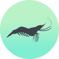
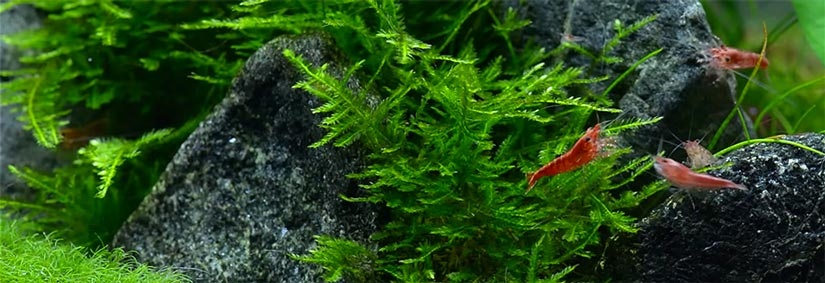

Setting up your Shrimp Aquarium
HOW DO I SET UP A SHRIMP TANK?
Setting up a shrimp tank is easy. Whether you want to house Ghost Shrimp, Cherry Shrimp, Amano Shrimp or even Crystal Red Shrimp the process will be the same. Generally hobbyists wanting to start a shrimp tank have had some experience with fish aquariums. This is useful but not entirely necessary. We will approach setting up the shrimp tank in stages below covering the most important steps.
Most species of aquatic shrimp are favored for their small size. Shrimp can be housed in aquariums as small as 5 gallons. However 10 gallons is more common and recommended. As with any aquarium more water volume will increase the stability which is very important when caring for shrimp. Shrimp can be more sensitive than fish to changes in water quality. Ghost Shrimp & Cherry Shrimp are hardier varieties and recommended for beginner shrimp enthusiasts.
Before setting up it is important ask a few questions that can go a long way. Is there a powerpoint nearby for electrical equipment? Is it close to a tap or bathroom for water changes? All-in-all make sure you think carefully about the placement of your new shrimp tank. It is extremely hazardous to move when filled with water.
Equipment Check List
- Aquarium 10 Gal+
- Aquarium Substrate
- Aquarium Filter
- Replacement filter media
- Heater
- Other decorations (such as fake or real plants)
- Aquarium Water Test Kit
- Shrimp food
- Aquarium Vacuum
- Fish Net
- Aquarium Glass Scrubber
- 5-gallon bucket

Choosing the Correct Hardware
- Shrimp tanks need hardware specific to shrimp. Filters should be purchased with sponge to wrap over the intake. Shrimp fry and adolescent shrimp have the tendency to be sucked into filters without sponge protection.
- Use the Volume Calculator to calculate the required flow rate and heater wattage your shrimp aquarium needs. Generally rounding up heater wattage is a good idea. Purchasing two equal wattage heaters will increase efficiency and is a small price to pay to avoid disaster.
- Substrate should be chosen specific to your shrimp species. Most shrimp thrive in lower pH climates with soft water. For this reason ADA Aquasoil, Seachem Fluorite range, RedSea Florabase and other planted substrates are a good choice. Bright shrimp such as Fire Cherry Shrimp & Crystal Red Shrimp will have richer and brighter colors on a darker substrate. Inert gravels can also be used but finer grains should be chosen for shrimp fry.

Planted Shrimp Tank vs Non Planted
- The vast majority of shrimp tanks are usually planted. Shrimp are omnivorous and may species are avid algae consumers. Plants go hand in hand with most species of shrimp. Low light setups can take advantage of moss and ferns. Higher lighting setups can create floors of planted HC substrate and walls of Rotala. Planted setups require more maintenance but they are beautiful and enrich the aquarium with dissolved oxygen.
- Non planted setups are easier to care for and require less maintenance. They are cheaper and have their advantages. They are best suited for rearing tanks or non display tanks. Bare bottom tanks are also common when breeding is primary concern. They allow easy cleaning and access for the hobbyist.
Cleaning and Placing Substrate
- Depending on the substrate used it is usually a good idea to rinse it. ADA and plant substrates often are ready to be placed into the aquarium. Gravel substrates should be washed a number of times to remove excess dust and debris. Substrate should be enough to cover the entire aquarium to at least 1" depth.
- Shrimp enjoy flat undulating terrain in the aquarium. It is recommended to leave the front of the aquarium open and flat. They often forage for food and search for partners in open spaces. By feeding the shrimp at the front of the tank they are more likely to stay within view.
- If housing shrimp in a planted tank an Iguami style aquascape is recommended. Large rocks are buried across the aquascape and substrate is filled around them. The aquascape is 'mountainous' but still relatively smooth. A perfect playground for shrimp.

Filling up the Aquarium
- Use a bucket or hosepipe to fill up the shrimp aquarium. This is an excellent time to check water parameters for your shrimp tank. If the water pH is too high or low it may need to be adjusted by using a store purchased buffer. Water can be softened by adding driftwood or small amounts of peat to the filter box.
- Ensure to use a commercial dechlorinator. Shrimp are sensitive to chlorines and chloramines found in tap water. This dechlorinate solution must be used each time a water change occurs. Follow the instructions on the bottle.
Connecting Filter & Material
- Clean the filter material by rinsing it through fresh water. As mentioned earlier shrimp are very sensitive to any heavy metal additives that may have been picked up in the warehouse.
- Connect the filter and place the intake and outake (depending on type) into the aquarium. The intake will need to carefully be fitted with sponge we mentioned earlier. This can be as simple as wrapping a thin sheet of sponge to the intake and using an elastic band to hold it on.
- An elastic band is better than a permanent solution for a number of reasons. The sponge will become filled with debris and will need to be cleaned once a week. The elastic band makes it easy to do so. Elastic bands are also cheap and easily replaceable compared to other methods.
Lighting
- Lighting can vary greatly depending on the setup. LED lighting is recommended and has become very affordable through the 21st century. A basic light purchased online or in a local store is suitable for a shrimp tank without plants. The light should be set to a maximum of 8 hours a day to avoid excess algae growth.
- For a planted setup the lighting is often more advanced. Depending on whether the tank has CO2 dosing and fertilizer dosing will govern lighting choice. Have a look at Planted Guide for further details on a planted setup. Also check out Lighting for more details specific to lighting choice.

Cycling
- Before adding the shrimp the aquarium will need to be cycled. This can take anywhere from 2-8 weeks and will require bi-weekly water testing. The heaters should be added to the aquarium and set anywhere from 72-85°F for cycling. The light should be plugged in and set to turn on for 8 hours per day.
- Continue to the article on cycling here to learn about cycling your shrimp tank.
Adding the Shrimp to the Shrimp Tank
- After cycling ensure water levels are optimal for your shrimp tank. Nitrite and Ammonia should return a reading of 0 ppm. Nitrate may be elevated, the addition of plants and a small water change can aid in it's reduction. Nitrate should be as low as possible in a shrimp tank. 0ppm is optimal.
- Shrimp purchased from the store should be added to a bucket or large bowl. Airline tubing is then used to make a siphon from the cycled shrimp tank into the bucket. Gently suck on one end of the line while placing the higher end into the aquarium water.
- Gravity will naturally pull the tank water down the tubing where it will flow out the other end. Use a rubber band to kink the tubing to the point where the flow stops. Adjust the elastic band to allow approximately 1 drop of water per second to leave the tubing.
- Continue to add the drops of aquarium water to the bucket. Check every few minutes on the status of the shrimp. This should continue anywhere from 20 minutes to half an hour.
- Then use a soft net to scoop the shrimp from the bucket and place them into the aquarium. Be careful to cover the net with one hand to avoid them jumping out. Monitor the shrimp in the aquarium, turn off the lights and wait at least 12 hours before feeding them.